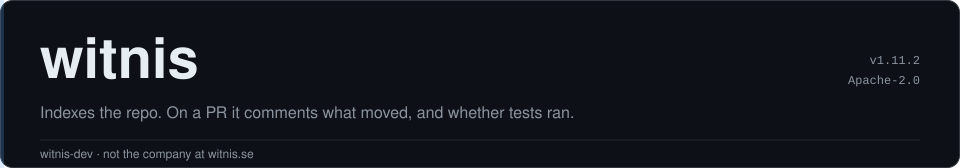

witnis impact Person (contracts-v1, trimmed)
{
"status": "success",
"repository": { "name": "spring-petclinic", "revision": "500158f…", "index_stale": false },
"result": {
"direct": [
{ "source": "…/owner/Owner.java:Owner", "target": "Person",
"relation_type": "inherits", "status": "observed", "start_line": 50 }
],
"transitive": [
{ "source": "…/owner/OwnerController.java:OwnerController", "target": "Owner",
"relation_type": "uses_type", "status": "derived", "start_line": 78 }
]
},
"limitations": ["uses_type is signature-derived (params/returns); not full flow-sensitive typing"]
}
Bootstrap + PR Gate + Isolated Verify
$ pip install -U witnis $ cd /path/to/repo && witnis loop-init $ witnis impact Person $ witnis pr-gate --base origin/main --head HEAD --format markdown $ WITNIS_ALLOW_VERIFY=1 witnis verify redact_text --execute